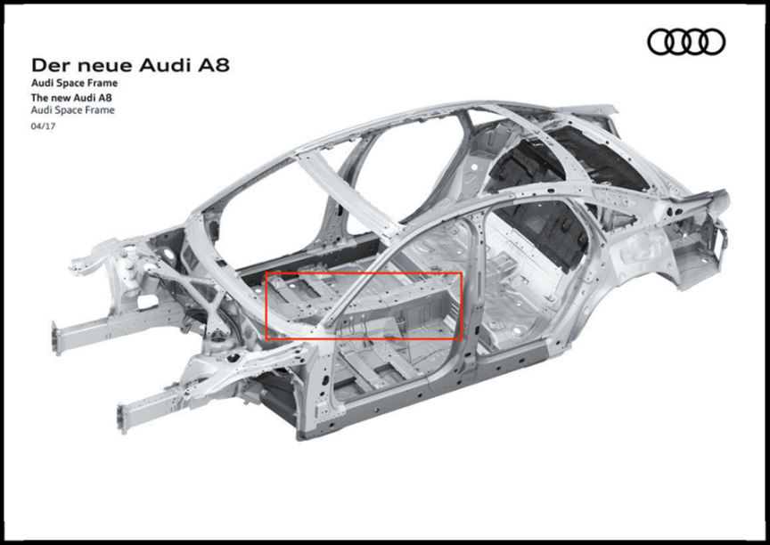
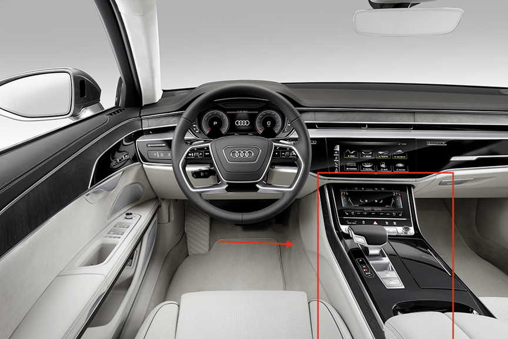
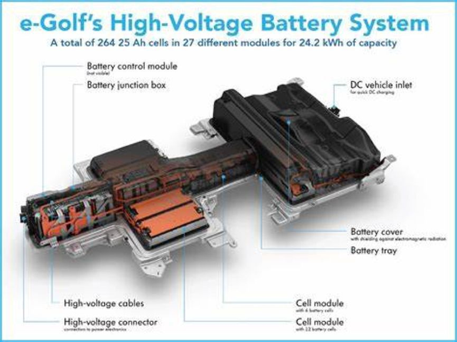
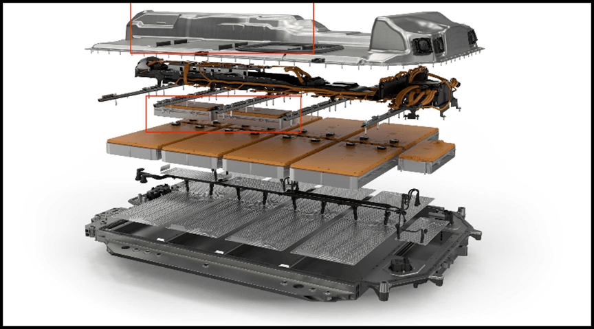
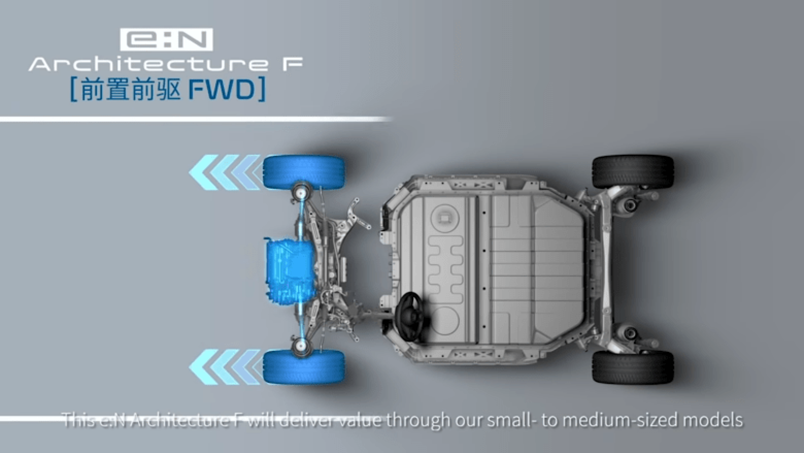
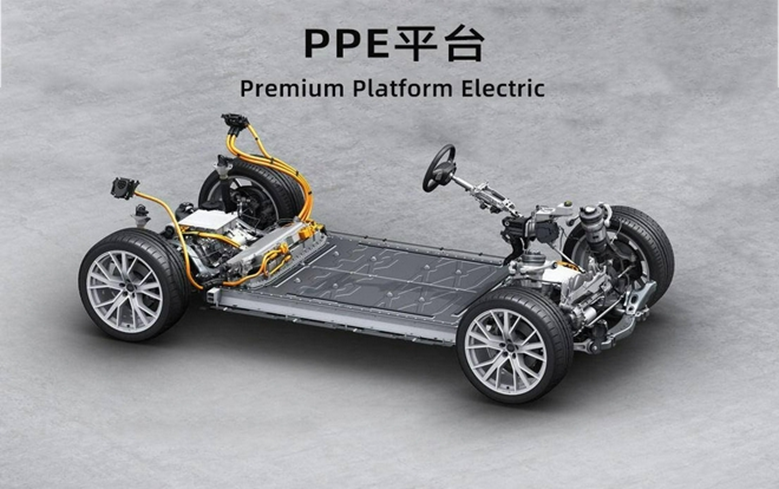

Сегодня, с ростом цен на топливо, все больше людей задумываются о покупке своего первого электромобиля, но как выбрать технически надежный электромобиль? С одной стороны, в отличие от топливного автомобиля, электрический седан может иметь вес топливного внедорожника за счет добавления батареи немалого веса (0,2-0,5 тонны), с другой стороны, двигатель внутреннего сгорания и связанная с ним механическая конструкция полностью исчезают. Вся конструкция кузова электромобиля должна быть перепроектирована. Поэтому необходимо начать с самой фундаментальной проблемы - структуры кузова, которая в корне определяет эксплуатационные характеристики электромобиля.
Электромобили стали неотъемлемой частью каждой автомобильной марки. Однако, когда дело доходит до конкретного направления развития, автомобильные компании (вследствие различных факторов, таких как стратегическое планирование, финансирование и научно-исследовательские мощности) пошли двумя путями. Первый - это изменение батареи под старую конструкцию кузова, что мы называем платформой с топливно-электрическим приводом, а другой - изменение конструкции кузова под батарею, что мы называем платформой с оригинальным электроприводом.
Для того чтобы разобраться, какой путь лучше, необходимо понять две отличительные особенности конструкции: первая - это "центральный выпуклый канал", а вторая - это моторный отсек, который занят двигателем внутреннего сгорания и механизмом рулевого управления с приводом на передние колеса.
Традиционный топливный автомобиль, будь то заднеприводный автомобиль продольной компоновкой или переднеприводный автомобиль со среднемотороной компоновкой, требует центрального пространства в передней части автомобиля. Этот "центральный выпуклый канал" располагается вдоль всего автомобиля, образуя центральную панель с подлокотником привычного нам автомобиля. Из-за связи между продольной трансмиссией и центральным карданным валом центральный канал заднеприводных и полноприводных автомобилей должен быть больше, чем у переднеприводных. Широкая зона центрального подлокотника стала фирменной чертой "роскошных автомобилей".
Возможно, именно по этой причине немецкие автомобильные компании стремятся сохранить этот "центральный выпуклый канал", пытаясь изменить форму аккумулятора, чтобы адаптироваться к старой структуре кузова. В случае с первым поколением e-golf, выпущенным Volkswagen в 2015 году, это типичный пример изменения формы батареи, чтобы подогнать ее под старую конструкцию кузова. Батарея может быть установлена в "центральный канал" только в неправильной многоугольной структуре, что сильно ограничивает емкость и ухудшает теплоотдачу батареи.
Это новейший электромобиль BMW i4 февраля 2022 года, здесь также видна традиционная структура топливного автомобиля.

В бесполезный для электромобилей "центральный выпуклый канал" BMW заключает два небольших модуля ячеек поверх плоского слоя аккумуляторного блока. Это добавляет дополнительные конструкции и кабели в аккумуляторном блоке, что не очень хорошо для емкости и теплоотдачи батареи.
При разработке платформ для электромобилей японские компании по производству обычных автомобилей решили проблему "центральной выпуклости", но по-прежнему очень консервативны в отношении распределения пространства в моторном отсеке.
Для топливного автомобиля с передним поперечным расположением двигателя двигатель внутреннего сгорания должен быть расположен перед передней осью, а рулевое управление и привод расположены за передней осью для балансировки центра тяжести. При проектировании платформы EV на базе обычного переднеприводного бензинового автомобиля невозможно разместить рулевое управление и рулевую тягу в исходном положении двигателя внутреннего сгорания, поскольку они занимают много места за передней осью, что может серьезно повлиять на объем аккумуляторного блока.
Не так давно Honda запустила собственный проект электромобиля, анонсировав сразу две чисто электрические платформы e:N: e:N F и e:N W. E:N F предлагает только передний привод, тогда как e:N W имеет как заднеприводную, так и полноприводную конфигурации. Как только Вы увидите переднеприводную электрическую платформу, будьте начеку. При детальном осмотре e:N F имеет механизмом рулевого управления с приводом на передние колеса, но между передней осью e:N F и блоком батарей остается огромный зазор. Это означает, что у электромобиля, построенного на платформе Honda e:N F, в любом случае не хватит запаса хода, чтобы догнать платформу с оригинальными электроприводными моделями того же размера. В условиях таких проблем, производительность будущих электромобилей Honda уже никого не волнует.
В конечном итоге, для конструктивного дизайна электромобиля, чтобы уместить больше элементов и улучшить теплоотдачу батареи, необходимо решить проблему "центрального канала выпуклости" и перераспределить пространство в моторном отсеке.
Лучший способ сделать это - уложить аккумуляторную систему абсолютно плоской, так как это позволяет каждой части элемента иметь по существу одинаковые условия теплоотдачи, гарантируя, что батарея не перегреется и не загорится, а зимой быстрее нагреется. Проектирование аккумуляторной системы должно быть завершено до проектирования кузова, и аккумуляторной системе должен быть отдан наивысший приоритет в проектировании, при этом вся конструкция кузова должна обслуживать аккумуляторный блок большей емкости.
В конструкции кузова платформы с оригинальным электроприводом с самого начала проектирования приоритет отдается размеру и форме блока батарей, резервируя достаточно места для его установки. Модели платформы с оригинальным электроприводом планируют пространство кузова таким образом, что моторный отсек исчезает, а все пространство перераспределяется на блок батарей. Запас хода в 600-1000 километров - главное преимущество такой конструкции.
В 2021 году Audi представила так называемую платформу PPE - первую настоящую платформу с оригинальным электроприводом: почти плоский блок батарей, рулевое управление передними колесами и рулевые тяги, расположенные перед передней осью, занявшие место прежнего двигателя внутреннего сгорания. Но первого электромобиля Audi на базе платформы PPE, который покинет завод, придется ждать примерно до 2024 года.
Почти все китайские автопроизводители с самого начала приняли платформу с оригинальным электроприводом, и здесь мы говорим о Roewe, Aion, Neo, Weltmeister и др. У BYD платформа с оригинальным электроприводом появилась немного позже. Каждое из решений этих автопроизводителей имеет свои отличительные особенности, о которых я подробно расскажу позже, так что следите за новостями!